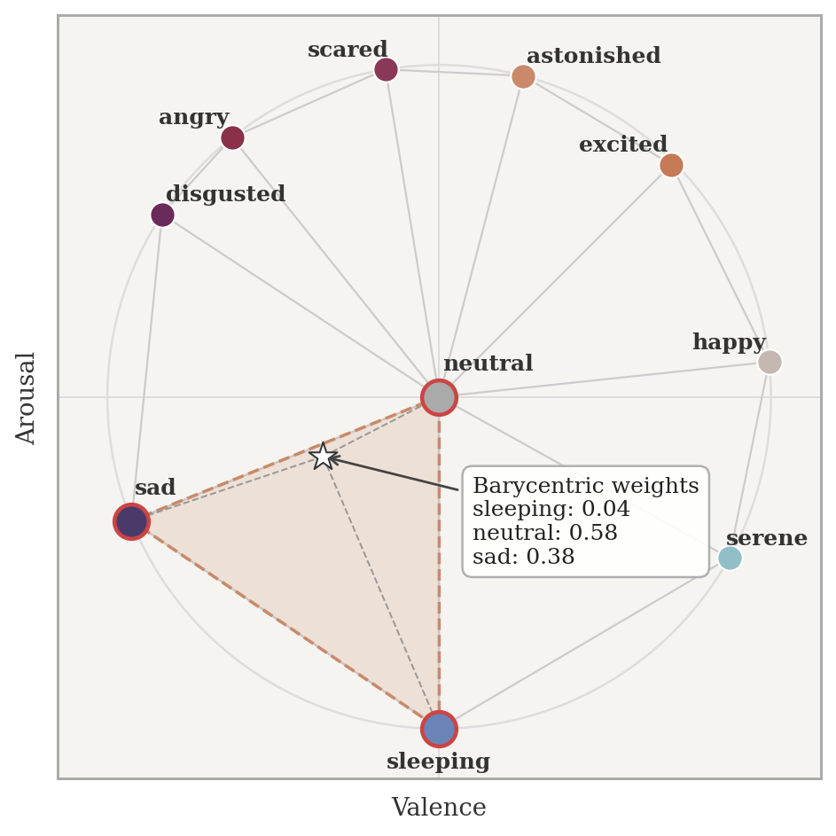
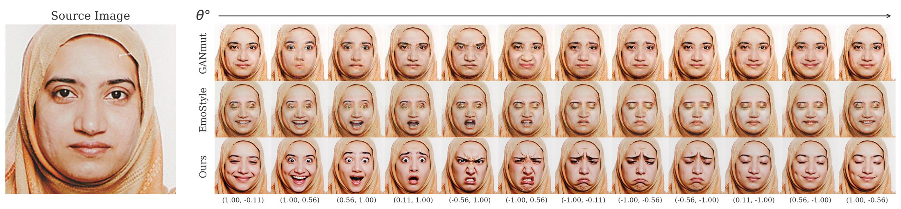
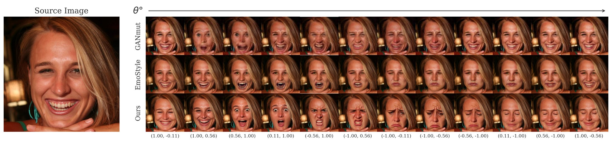

Abstract
Emotions are expressed on a continuum and are naturally described in the valence–arousal (VA) space. Existing VA-based image editors are typically training-based and domain-specific, limiting them to VA regions seen during training and making them brittle across datasets and domains. Meanwhile, despite producing high-quality edits, state-of-the-art foundation image editors are not continuous affective controllers: non-linear emotion representations in text encoders makes prompt interpolation poorly calibrated, so accurate and continuous VA control remains unreliable. To fill this gap, we introduce Barycentric Guidance, a training-free framework that turns pretrained foundation image editors into continuous affective controllers over VA, requiring no finetuning, extra data, or model changes. Our method maps any target VA point to simplex-based guidance weights, enabling VA controllability in three aspects: (i) accurate targeting of VA states, (ii) broad coverage across the VA plane, and (iii) continuous control. Across three face datasets, we improve VA target accuracy by 25–29%, expand VA-plane coverage by 28–50%, and increase expression diversity by 29–49%, over the strongest baseline. Unlike prior domain-specific methods, our training-free approach exploits the foundation model's inherent versatility, enabling generalization beyond human faces to animals, artworks, and complex scenes within a single framework.
Method

- Build an emotion mesh.Foundation editors excel at discrete edits, so discrete emotion anchors (happy, sad, angry, …) are placed at their VA positions and joined into a triangle mesh.
- Find barycentric weights.For a target \((v, a)\), take the enclosing triangle \(A, B, C\) (or the closest one) and solve
$$\begin{bmatrix} A_x & B_x & C_x \\ A_y & B_y & C_y \\ 1 & 1 & 1 \end{bmatrix}\begin{bmatrix} w_1 \\ w_2 \\ w_3 \end{bmatrix} = \begin{bmatrix} v \\ a \\ 1 \end{bmatrix}$$
- Diffusion Guidance.The weights mix the editor's noise predictions for each emotion prompt \(y_i\):
$$D^{\text{edit}}_{\text{bary}}(x_t) = \sum_{i=1}^{3} w_i\, D_\theta(x_t, y_i)$$Scaling the CFG weight with distance from neutral, \(w^{*}_{\text{cfg}} = 1 + (w_{\text{cfg}} - 1)\sqrt{v^2 + a^2}\), controls emotional intensity.
Results
On facial expression editing, Barycentric Guidance outperforms prior VA-based editors on AffectNet, FFHQ and CelebA-HQ.
| VA Controllability | Image Quality / Preservation | ||||||||
|---|---|---|---|---|---|---|---|---|---|
| Dataset | Model | RMSE ↓ | VA Entropy ↑ | VA Std ↑ | \(S^{*}_{2D}\) ↓ | FID ↓ | IS ↑ | ID Sim. ↑ | LPIPS ↓ |
| AffectNet | GANmut | – | 0.616 | 0.47 / 0.38 | – | 36.89 | 3.90 | 0.76 | 0.128 |
| EmoStyle | 0.610 | 0.423 | 0.46 / 0.31 | 0.147 | 36.72 | 2.81 | 0.31 | 0.276 | |
| Ours | 0.433 | 0.916 | 0.64 / 0.57 | 0.303 | 11.02 | 4.42 | 0.55 | 0.096 | |
| FFHQ | GANmut | – | 0.687 | 0.50 / 0.36 | – | 73.20 | 4.49 | 0.71 | 0.282 |
| EmoStyle | 0.568 | 0.457 | 0.48 / 0.32 | 0.148 | 25.50 | 4.12 | 0.67 | 0.172 | |
| Ours | 0.418 | 0.890 | 0.64 / 0.51 | 0.307 | 13.85 | 5.61 | 0.55 | 0.097 | |
| CelebA-HQ | GANmut | – | 0.651 | 0.48 / 0.37 | – | 59.59 | 3.24 | 0.70 | 0.267 |
| EmoStyle | 0.550 | 0.513 | 0.47 / 0.34 | 0.149 | 17.44 | 2.94 | 0.65 | 0.154 | |
| Ours | 0.412 | 0.877 | 0.65 / 0.54 | 0.293 | 11.80 | 3.53 | 0.54 | 0.125 | |
VA controllability and image quality on three face datasets. VA Std is reported as valence / arousal. Best results per dataset in bold.


Edits around the edge of the VA circle (labels are target (valence, arousal)). Ours preserves backgrounds better and covers extreme expressions, especially sleepy and the negative, high-arousal quadrant.
Citation
@inproceedings{mannering2026barycentric,
title = {Barycentric Guidance: Turning Foundation Image Editors
into Continuous Affective Controllers},
author = {Mannering, Harvey and Huang, Zhiwu and Pr{\"u}gel-Bennett, Adam},
booktitle = {Advances in Neural Information Processing Systems (NeurIPS)},
year = {2026}
}